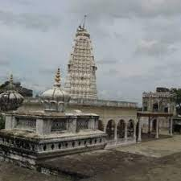

burji pav
Mumbai street bhurji is flavoured with either pav bhaji masala or kitchen king masala.
" City of White Gold ! "
Washim is located in the eastern region of Vidharbha. Akola lies to its north, Amravati lies to its north-east, Hingoli lies to its south, Buldhana lies to its west, Yavatmal lies to its east. River Penganga is the main river of the district. It flows through the Tehsil of Risod. Later it flows through the boundary of Washim and Hingoli districts. River Kas is the main tributary of Penganga. River Kas meets Penganga about 1 km from the village of Shelgaon Rajgure. River Arunavati and its tributaries originate in the Tehsil of Washim and them flows through the tehsils of Mangrul Pir and Manora into the district of Yavatmal. River Katepurna originates in the hilly areas of the district and flows northwards through the tehsil of Malegaon and enters the Akola district... Washim is located in the eastern region of Vidharbha. Akola lies to its north, Amravati lies to its north-east, Hingoli lies to its south, Buldhana lies to its west, Yavatmal lies to its east. River Penganga is the main river of the district. It flows through the Tehsil of Risod. Later it flows through the boundary of Washim and Hingoli districts. River Kas is the main tributary of Penganga. River Kas meets Penganga about 1 km from the village of Shelgaon Rajgure. River Arunavati and its tributaries originate in the Tehsil of Washim and them flows through the tehsils of Mangrul Pir and Manora into the district of Yavatmal. River Katepurna originates in the hilly areas of the district and flows northwards through the tehsil of Malegaon and enters the Akola district


Marleshwar is a place in Sangameshwar subdivision of Ratnagiri district in the Indian state of Maharashtra. This is a small Shiva Temple which takes about one and a half hours to reach by road. The Temple can be reached by climbing approximately 300-400 steps which are lined with refreshment stalls to keep the climbing pilgrims refreshed. The Shiva Temple is situated inside a cave and has a small viewing platform in its premises from which the magnificent Dhareshwar Waterfalls can be admired. Every year thousands of devotees visit the temple and perform ablutions in the nearby Bav river.
A trek through Chiplun to reach Marleshwar Temple is a 3-day trek from Helwak through Chandoli Forest. Since it is not a one-day trek, the destinations are broken down. One the first day, the trekkers may cover Ram Ghal, Bhairav Gad and Patharpunj Village. The second day may include reaching Prachit Gad through the dense Chandoli Forest and Chandel Village. And on the third day, one can cover Kundi Village, Mahimar Gad, and Marleshwar. If the time and occasion call for an unplanned stay at one of the villages, it can become a 4 to 5 day-long exciting adventure.
On the day of 'Makarsankranti' a celebration of the marriage of Marleshwar and Girijadevi takes place. On 'Mahashivratri' and 'Tripuri Poornima' there is a fair. Marleshwar name may have come from Maral village .
We can find two Jain temples at Shirpur. One of these temples has the black coloured idol of Bhagawan Parshwanatha in the Padmasana.Jain Temple Shirpur Jain. Antariksha Parshwanath Jain Mandir is situated at Shirpur. A large number of devotees of Jain religion visit this temple
Karanja is a holy place for Hindus and Jains. It is the birthplace of Shri Nrusimha Saraswati Swami Maharaj, believed to be the second incarnation of Lord Dattatreya. There is a large lake in Karanja Lad known as “Rishi Talao“. The town was looted twice by the famous Maratha sardar Prataprao Gujar on the orders of the sole sovereign Hindu King, Shri Chhatrapati Shivaji Maharaj. Karanja was ruled by Nawab Subhan Khan, whose “mahal” is currently used as a Municipal Council Office. His Godowns is used as the Karanja police station. He has built a lot of structures around Karanja Lad. He constructed a wall and four doors around Karanja, namely the Delhi Gate, the Darwha Gate, the Mangrul Gate and the Poha Gate. His name and period of ruling is embossed on the Municipal Office, all gates and all structures erected by him. He had also built a big mosque in the Astana Area of Karanja Lad. The “Nawab Subhan Khan Masjid” mosque is named after him. Karanja is famous for its Nrusimha Saraswati Swami Maharaj temple. Shri Nrusimha Saraswati Gurumaharaj is the second avatar (incarnation) of Lord Dattatreya. Born in Karanja in 1378, he travelled far and wide in what are now known as the States of Maharashtra, Karnataka, and Andhra Pradesh. He achieved Sainthood and performed several miracles. He imparted spiritual knowledge to his disciples, many of whom themselves attained Sainthood. The Gurumandir Temple conducts several major events to celebrate the various avatars of Lord Dattatreya.
The ancient temple of Balaji is said to have been first built by a local named Bhavani Kala, who was the Subhedar at the local Karanja Thana. He soon became highly respected and was appointed as the 'Divan' (minister) of Sabaji Bhosle and Janoji Bhosle. During the reign of Aurangzeb, apparently the temple idols were hidden beneath the soil, to be disovered years later by a horseman. Records show that the Balaji temple, Washim which is to be seen today was built over a span of nearly 12 years. Bhavani Kala not only built the main shrine for the idols, but also constructed a large area for visiting pilgrims so that they could stay within the temple complex. In addition, a separate area was constructed for the Brahmans to take their meals and rooms were built for administrative offices. The main idol of Balaji is made of black stone and is decorated with ornaments. At the entrance of the temple, you can see the etched words inscribed on the pillars which give the year of the temple as '1700 Shaka'. Some years ago, a stunning gold-plated dome was added to the temple's inner sanctum. On either side of the main Balaji Temple are 2 other temples: one dedicated to Vyankateshvar Balaji, and the other to Ramchandra. In the latter temple are images of Ramchandra, Lakshmana, Sita, Maruti and Rariha Krishna. The festival of Ramnavami is celebrated here annually.

Mumbai street bhurji is flavoured with either pav bhaji masala or kitchen king masala.
Puran poli is a sweet flatbread stuffed with a sweet lentil filling made from husked spilt bengal gram (chana dal) and jaggery.
Egg Dosa is a popular South Indian dish where the traditional dosa is topped with eggs and spices
It is very famous in washim district
It consist of various vegitables
Uses Thirsty Fresh gives you 5 different flavours of Pani puri masalas – REGULAR, GARLIC, KHATTA MITHA, JALJEERA and MIX SPICE.


Address: Washim, Maharashtra 444505
Timing: 9am to 8pm.

Address: Washim, Maharashtra 444505
Timing: 10am to 9pm.

Address: Mangrulpir, Maharashtra 444403
Timing: 9am to 9pm.

Address: Bakliwal tower, opposite to State Bank of India, Washim, Maharashtra 444505
Timing: 8am to 10pm.

Address: Ambedkar Chowk, Washim, Maharashtra 444505
Timing: 9am to 9pm.

Address:washim,maharashtra
Timing: 10am to 8.30pm.

Amravati district is a district of Maharashtra state in central India. It is the administrative headquarter of Amravati division, which is one of the two divisions in Vidarbha (other being Nagpur), out of total 6 regions in state of Maharashtra.
Yavatmal district About this soundpronunciation (help·info), formerly known as Yeotmal, is a district of the Indian state of Maharashtra. It is located in the region of Vidarbha, in the east-central part of the state. after Nagpur and Amravati.[3] Yavatmal city is the administrative headquarters of the district.
Buldhana district is located in the Amravati division of Maharashtra, India . The name of the district is probably derived from Bhil Thana . It is situated at the western border of Vidarbha region and is 500 km away from the state capital, Mumbai